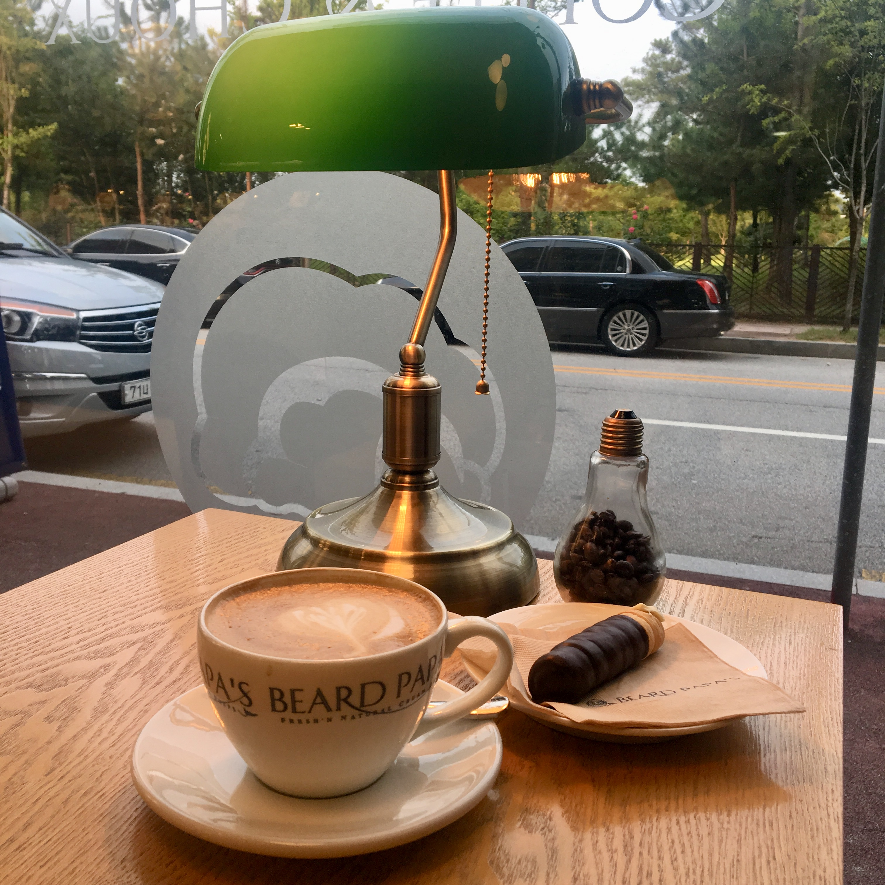

Snacks(간식)
- 비어드파파

바닐라빈으로 만든 크림을 넣은 슈를 파는 카페. 일반적인 슈는 물론 도넛이나 코르네, 크로와상 등의 빵 안에 슈를 넣어서 판다는 점이 독특하다. 개인적으로는 슈 안에 들어가는 크림이 너무 달지 않고 고소해서 만족스럽다.
바닐라빈으로 만든 크림을 넣은 슈를 파는 카페. 일반적인 슈는 물론 도넛이나 코르네, 크로와상 등의 빵 안에 슈를 넣어서 판다는 점이 독특하다. 개인적으로는 슈 안에 들어가는 크림이 너무 달지 않고 고소해서 만족스럽다.